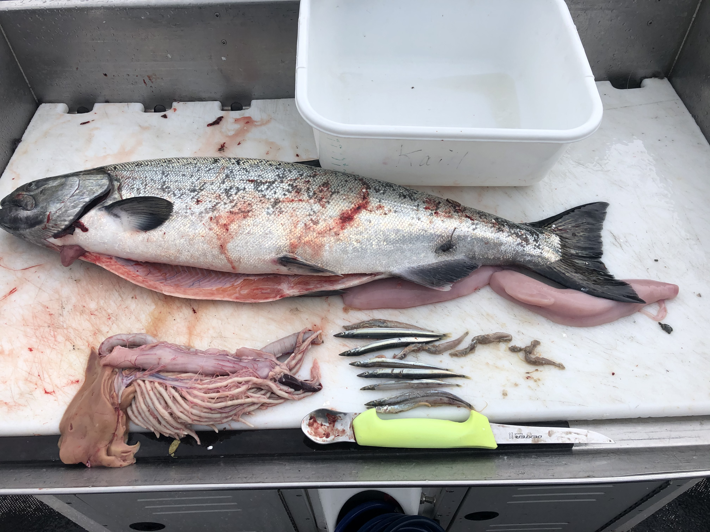

Ocean Bight, LLC
Marine Ecological Consulting
Ocean Bight is a marine ecological consulting practice specializing in research on marine food webs, glacial fjord ecosystems, and integrated wildlife monitoring and assessments.
Recent human-driven warming of the atmosphere, oceans, and land is affecting every region of the globe. In Alaska's subarctic and Arctic oceans, we are already experiencing warmer ocean temperatures, increased freshwater runoff, significant glacier and sea ice loss, and extreme marine heatwaves. These changes impact fish and wildlife populations that support Alaska's economy across many sectors including recreation, tourism, and commercial fisheries.
Ocean Bight offers research and consulting services to address these challenges through data collection, citizen science, and public engagement to raise climate awareness. This website provides a platform to share compelling science stories, data visualizations, and invites public participation.
Projects
Climate Data Stories
Climate Data Stories transform publicly available climate datasets into visual narratives that connect the science to our everyday lives. By framing global trends through a compelling personal lens, these stories aim to make the impacts of climate change tangible and relatable for a broader audience.
A Record of Warming Across Generations
For more than a century, land and sea surface temperatures have shifted from cooler-than-average conditions (blue) to record warmth (red), with each successive generation experiencing less of the cool past and more warming in a rapidly changing climate.

The figure above shows the change in average Northen Hemisphere land and sea temperatures experienced by four generations in my family, with each vertical bar representing one year and colors showing change from a mid-20th-century baseline (blue = cooler, red = warmer). From my grandmother's cool childhood temperatures to my nephew's record-warm land and ocean surface temperatures, the climate we experience during our lifetime shapes how we understand the world.
Glacier Ice: Going Going Gone
Melting glaciers are among the most visible signs of a warming planet. As ice retreats, meltwater adds to global sea-level rise, and ice calving events signal rapid, ongoing change. Across coastal Alaska, tidewater glaciers are thinning, retreating, and disappearing at unprecedented rates as the climate warms.

Columbia Glacier in Prince William Sound, Alaska has been retreating rapidly for decades. Since the 1980's this tidewater glacier has lost more than half of it's thickness and volume. These images show the changes that have occurred in ice thickness and extent between July 2013 (top) and September 2019 (bottom), which spanned the period before and after unprecedented marine heatwaves in the Gulf of Alaska. Learn more about the Columbia Glacier Retreat from the World of Change: Columbia Glacier. Photos: Mayumi Arimitsu
Seabirds as First Responders
A marine heatwave of unprecedented intensity, duration, and spatial scale occurred in the North Pacific during 2014-2016 and led to the largest seabird die-off ever recorded. We later learned that seabirds were just the tip of the iceberg. The Pacific marine heatwave (AKA "the Blob") was associated with catastrophic disruptions of marine food webs that impacted seabird, humpback whale, and commercial fish populations in the Gulf of Alaska.

The multiyear marine heatwave known as "the Blob" caused widespread ecological impacts in the North Pacific Ocean. Four million Common Murres are missing from their breeding colonies in Alaska, making this the single largest documented wildlife mortality event in the modern era. Impacts to marine predators were widespread and coincided with forage fish population collapse and other changes lower in the food chain. Harmful algal blooms and metabolic effects of warming ocean temperatures provided a window into the ecosystem impacts of extreme warming events.
For more information, watch this USGS North Pacific Marine Heatwave video on YouTube
Chomp Watch
Chomp Watch is a citizen science initiative that engages fishers and researchers in collaborative data collection to understand salmon feeding ecology and marine ecosystem health. Below is an example of how image data can quantify changes in prey composition over time.

Chinook salmon diet composition 2019-2025: Average fish counts by forage species (color) and year (x-axis). Sample size (n), and number of empty stomachs per year are noted. Error bars are standard errors (SE). Empty stomachs are not included in the average fish counts.
Example Chinook salmon stomach photo for Chomp Watch. Thanks to image data contributors including recreational fishers John Moran, Lara Dzinich, Chris Lunsford, Dave Berger, Pat Malecha, Shawn Carey, Marina Lindsey, Andrew Dimond, and others
Gallery